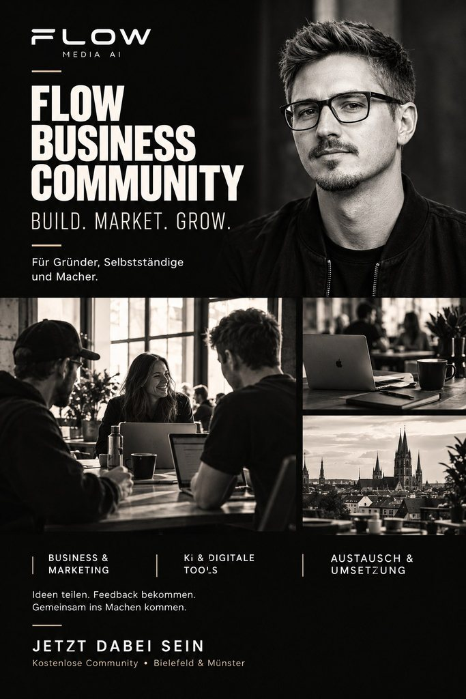

Flow Business Community · Build. Market. Grow.
Mach deine Ideen
nicht allein.
Die kostenlose WhatsApp-Community für Gründer, Selbstständige und Macher. Ideen teilen, Feedback bekommen und mit KI endlich ins Umsetzen kommen.
Kostenlos · direkt in WhatsApp · Bielefeld, Münster und digital
- Business & Marketing
- KI & digitale Tools
- Austausch & Umsetzung
Kommt dir das bekannt vor?
„Ich hab die Idee, aber nicht die Technik.“
Du weißt genau, was du bauen willst – nur nicht, wie. Also bleibt es bei der Idee.
„Jede Woche ein neues KI-Tool.“
Zu viele Möglichkeiten, zu viele Tutorials, keine Richtung. Und keine Zeit, alles selbst durchzuprobieren.
„Ich mach alles allein.“
Marketing, Website, Kunden, Technik. Niemand, der mitdenkt, Feedback gibt oder sagt: Probier mal das.
Dir fehlen nicht die Ideen. Dir fehlen die richtigen Menschen drumherum.
Was dich erwartet
Austausch statt Einzelkampf.
Ein Ort für Leute, die etwas aufbauen wollen. Keine Verkaufsshow, kein Tool-Spam – sondern echte Fragen, ehrliches Feedback und gemeinsames Machen.
Ideen teilen
Stell deine Idee vor und bekomm Feedback von Menschen, die selbst gründen und bauen.
KI verständlich
Praktische Impulse, was mit KI wirklich geht – erklärt ohne Fachchinesisch, an echten Beispielen.
Digitaler Stammtisch
Offener Austausch, live und digital. Fragen mitbringen, zuhören, andere kennenlernen.
Workshops
Kompakte Live-Workshops, in denen du direkt etwas baust – von der Website bis zum digitalen Produkt.
Hilfe, wenn's hakt
Du steckst fest? Frag in der Gruppe. Oft hat jemand das Problem schon gelöst.
Skill Store
Zugang zum Flow DNA Skill Store – fertige KI-Skills, die du direkt in deinen Projekten nutzt.
Für wen
Für Macher mit vielen Ideen.
- 01Gründer und Business Starter
- 02Selbstständige und Solopreneure
- 03Coaches und Dienstleister
- 04Kreative Unternehmer
Wichtiger als deine Branche ist deine Haltung: neugierig, offen und bereit, selbst etwas zu bewegen. Vorwissen in KI brauchst du nicht.

Wer dahintersteht
Hi, ich bin Maik.
Ich bin KI-Sparrings- und Umsetzungspartner für Gründer und Selbstständige. Ich baue selbst Apps, Websites, Tools und Automatisierungen – und zeige, wie du das mit KI auch kannst.
Warum diese Community? Weil Ideen schneller wachsen, wenn man sie teilt. Hier geht es nicht um möglichst viele KI-Tools, sondern darum, gemeinsam ins Machen zu kommen.
So kommst du rein
In 30 Sekunden dabei.
Antippen
Tipp auf „Kostenlos beitreten“. WhatsApp öffnet sich von selbst.
Beitreten
Bestätige den Beitritt zur Flow Business Community. Fertig – kostenlos, ohne Anmeldung.
Vorstellen
Sag kurz Hallo: Wer bist du, woran arbeitest du, welche Idee hast du im Kopf?
Komm in den Flow
Deine Idee.
Unsere Community.
Weniger suchen, mehr erschaffen – mit Menschen, die genauso ticken wie du.
Kostenlos · direkt in WhatsApp